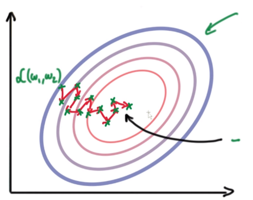
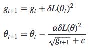
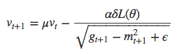

本页内容主要面向已经了解随机梯度下降原理的读者。
下文介绍的各种更新器之间最主要的区别是对于学习速率的处理方式。
Theta（θ）是权重，每个theta按其对应的损失函数的梯度进行调整。
Alpha（α）是学习速率。如果alpha值很小，那么向最小误差收敛的过程会比较缓慢。如果alpha值很大，模型会偏离最小误差，学习将会停止。
由于定型样例之间的差异，损失函数(L)的梯度在每次迭代后变化很快。请看下图中的收敛路径。更新的步幅很小，在向最小误差逼近的过程中会来回振荡。
Github：Deeplearning4j中的SGDUpdater
我们用动量（momentum）来减少振荡。动量会根据之前更新步骤的情况来调整更新器的运动方向。我们用一个新的超参数μ（mu）来表示动量。
上图为使用了动量的SGD算法。Github：Deeplearnign4j中的Nesterov动量更新器
Adagrad会根据每个参数对应的历史梯度（之前更新步骤中的情况）来调整该参数的alpha。具体方法是将更新规则中的当前梯度除以历史梯度之和。其结果是，梯度很大时，alpha会减小，反之则alpha增大。
参考：Deeplearning4j中的AdaGradUpdater
RMSProp和Adagrad的唯一区别在于g_t项的计算方式是对梯度的平均值而非总和进行指数衰减。
此处的g_t称为δL的二阶矩。此外，还可以引入一阶矩m_t。
像第一个例子中那样加入动量……
……最后像第一个例子中一样得到新的theta。
Github：Deeplearning4j中的RMSPropUpdater
AdaDelta同样采用指数衰减的g_t平均值，也就是梯度的二阶矩。但它不采用通常作为学习速率的alpha，而是引入x_t，即v_t的二阶矩。
参考：Deepelearning4j中的AdaDeltaUpdater
ADAM同时使用一阶矩m_t和二阶矩g_t，但二者均会随时间衰减。步幅约为±α。当我们不断逼近最小误差时，步幅会逐渐缩小。